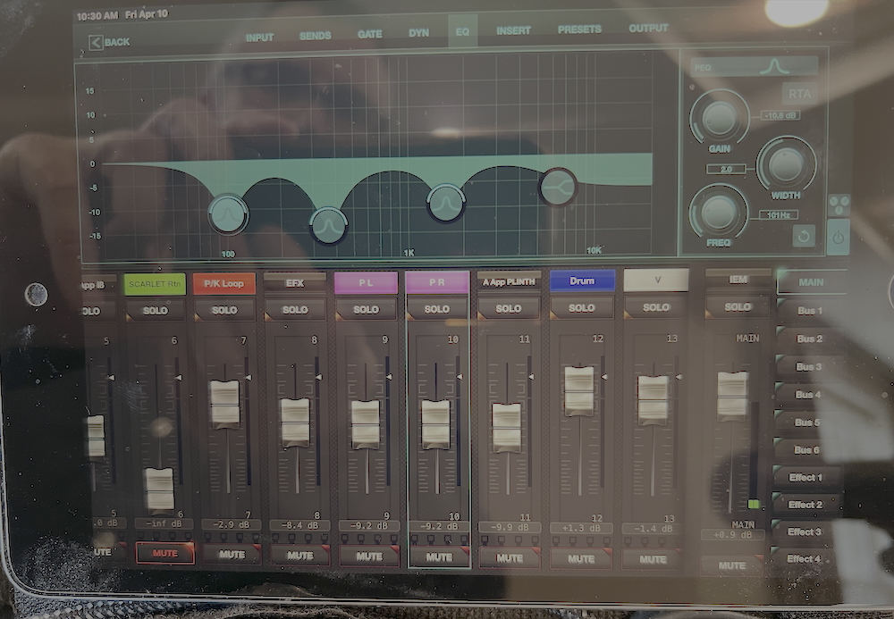

Audio
Pro Sound · iPad XR18 Mixer
Paul runs his own front-of-house mix via an XR18 digital mixer controlled from an iPad. This integrates with any existing PA or broadcast system.
For any front of house engineer or TV transmission system.
For the House Engineer
Saving Your Scene — Before Making Changes
Before altering anything on the desk, please save the current state as a scene:
- Open the X AIR app (or connect via browser or tablet)
- Tap the Scenes button in the top menu area
- Tap Save or the + icon to create a new scene
- Name it something like Paul's Previous followed by the date
- Confirm and save
At the end of the show, please save your own scene under the venue name and date.
Recalling Paul's Scene
To restore Paul's mix after you've finished your adjustments:
- Go back to Scenes
- Find Paul's saved scene in the list
- Tap it, then tap Load or Recall
- Everything snaps back to exactly how it was
Setup Time
A minimum of one hour setup time is required — an hour and a half is strongly preferred, especially for a first visit to a venue.
Other people being present during setup is absolutely fine. Once everything is in place, the sound check itself takes five minutes maximum for that room.
Piano Positioning
The right-hand side of the piano — the curved side — should face towards the audience. Please refer to the photos above for reference.
To protect the instrument, soft black Velcro is applied to secure performance equipment and prevent sliding or marking. It removes cleanly without leaving a trace and is virtually invisible during the show. You are welcome to leave it in place if further performances are anticipated.
Nice to Have
Doors open to the performance area at least thirty minutes before showtime.
Show duration of one hour, with allowance for a thirty-minute run-on.
A piano that is in tune with all notes working — appreciated but not a requirement.
If any area of the room has no line of sight to the performance area, closing it off during the show is appreciated where possible.
One public room available nearby.
Thank you for your patient consideration.
Looking forward to a special event.
Paul Tosh